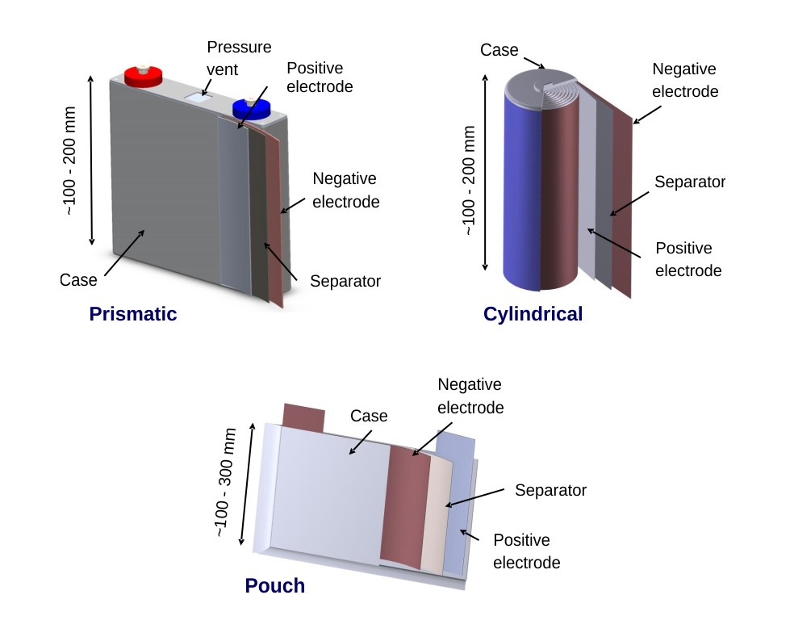

Літій-залізо-фосфатна батарея (LiFePO4) складається з наступних компонентів:
- Катод: Це позитивний електрод батареї. У випадку LiFePO4 батареї катод складається з літієвого залізофосфату. Цей матеріал є безпечним і стійким до перегріву порівняно з іншими літій-іонними батареями.
- Анод: LiFePO4 акумуми.
- Електроліт: Електроліт - це речовина, яка забезпечує рух іонів між анодом і катодом. У більшості літій-іонних батарей використовується органічний рідкий електроліт, хоча в деяких випадках можуть використовуватися полімерні або керамічні електроліти.
- Сепаратор: Сепаратор розділяє анод і катод, запобігаючи короткому замиканню і сприяючи руху іонів літію в батареї.
- Оболонка або обгортка: Це захисний шар, який оточує всю батарею і забезпечує механічний захист.
